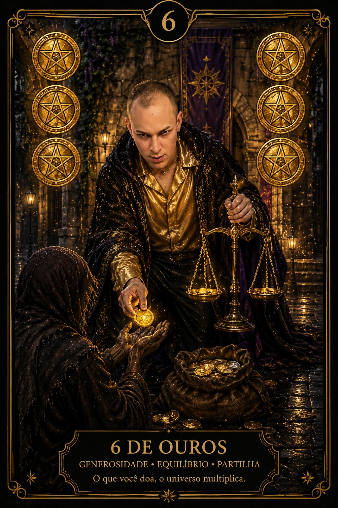

Tarot para Dinheiro com os pés na realidade material
Esta tiragem começa pela situação atual, reconhece recursos e padrões, define uma ação concreta e observa uma tendência. Ela não promete lucro nem substitui planejamento financeiro.
⊕Valores, dívidas, contratos e riscos precisam ser conferidos fora das cartas.

REALIDADE · RECURSO · AÇÃO
Cartas
5
Tema
Recursos
Base
Realidade atual
Centro
Ação concreta
REFLEXÃO, NÃO PROMESSA
Organize atenção antes de organizar números
O Tarot pode revelar como você percebe segurança, troca, escassez, responsabilidade e uso de recursos. Ele não calcula orçamento, prevê mercado, garante renda ou escolhe investimentos.
Leve para a leitura números conhecidos, prazos e limites reais. Depois, confronte toda interpretação com extratos, documentos e orientação qualificada.
MÉTODO OFICIAL DA DIVINA BRUXA
As cinco posições de Dinheiro & Recursos
1
PONTO DE PARTIDA
Realidade atual
O cenário material reconhecido agora, sem ocultar números ou condições importantes.
2
APOIO
Recurso disponível
Uma capacidade, rede, informação ou margem que pode ser utilizada com responsabilidade.
3
REVISÃO
Padrão a rever
Um hábito, crença ou repetição que merece ser observado sem culpa.
4
PRÁTICA
Ação concreta
Um passo específico e proporcional que pode ser executado e acompanhado.
5
CONTINUIDADE
Tendência material
Uma possibilidade sob as condições atuais, não garantia de ganho ou perda.
PERGUNTAS RESPONSÁVEIS
Pergunte sobre comportamento, recursos e critérios
✓
Realidade
“Que aspecto da minha situação financeira preciso enxergar com mais clareza?”
✓
Recurso
“Que capacidade posso desenvolver para lidar melhor com este momento?”
✓
Ação
“Qual próximo passo cabe nos meus recursos e pode ser medido?”
×
Evite aposta
Não use cartas para loteria, jogos, especulação ou promessa de enriquecimento.
CHECKLIST DE REALIDADE
Depois da leitura, abra os números
Registre renda, despesas, dívidas, reserva, prazos e obrigações. Identifique qual dado confirma ou contradiz sua interpretação e transforme a “ação concreta” em uma tarefa com data.
Se a questão envolver crédito, investimento, imposto, contrato ou endividamento, procure um profissional habilitado e compare fontes confiáveis.